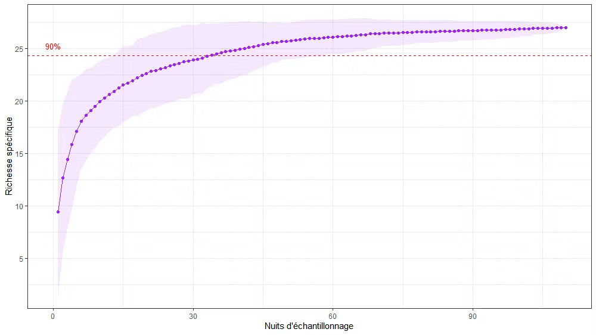
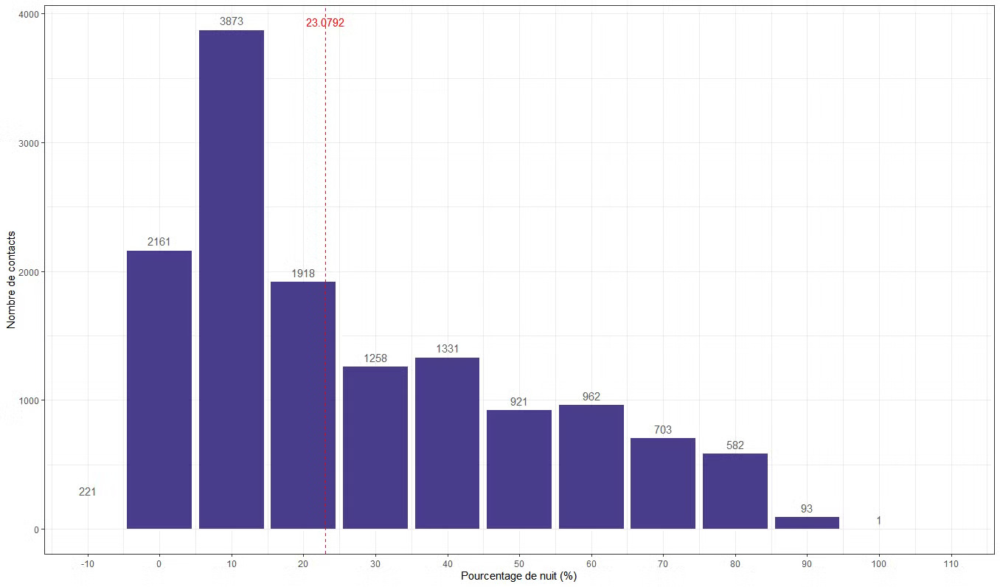
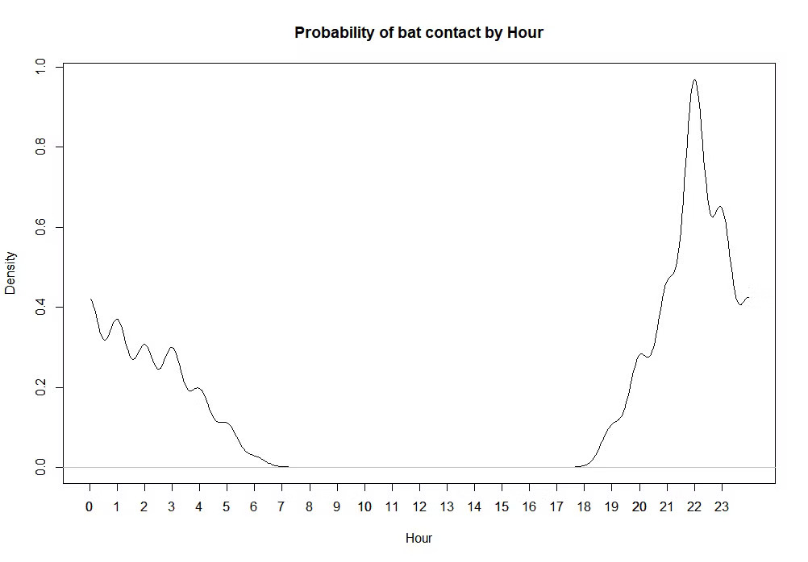

Optimisation des process d’inventaires chiroptérologiques
En écologie, optimiser le temps sur le terrain est essentiel pour maximiser la collecte de données de qualité, cibler les efforts là où ils sont nécessaires, minimiser les coûts et les impacts environnementaux, et élaborer des stratégies de conservation efficaces. En utilisant des méthodes efficaces d'échantillonnage et de collecte de données, les écologues peuvent gagner du temps tout en fournissant des données pertinentes et exhaustives.
Contexte et objectifs
En écologie, un sujet important est le trade-off (compromis) entre le temps passé à l’échantillonnage et l’exhaustivité des données recueillies. Dans le cas de l’inventaire des chauves-souris, il est intéressant de se demander combien de nuits d’enregistrement seraient nécessaires pour avoir une richesse spécifique satisfaisante (≥90% des espèces présentes), dans l’optique d’optimiser le temps passé sur le terrain et le temps d’analyse au bureau.
Pour ce faire, en concaténant les données de multiples terrains suivant le même protocole d’enregistrement, il est simple de déterminer le nombre moyen de nuits minimales nécessaire pour réaliser un protocole d’inventaire satisfaisant, notamment via une courbe d’accumulation.
Courbe d’accumulation de la richesse spécifique (nombre d’espèces différentes identifiées) en fonction du nombre de nuits d’échantillonnage enregistrées dans des conditions météorologiques satisfaisantes.
Ainsi, il est observable qu’au-delà d’une trentaine de nuits d’échantillonnage dans des conditions météorologiques satisfaisantes, près de 90% de la richesse spécifique (du nombre d’espèces) sont contactés. Bien sûr, ceci dépend de la saison des enregistrements et de l’écologie des espèces, mais ceci permet de poser la base d’une trentaine de jours d’enregistrements répartis sur les 3 principales saisons pouvant montrer des variations intra-annuelles : le printemps et l’automne lors des mouvements de transit semi-migratoire et l’été pendant la période de mise-bas.
Interprétation
En montrant la distribution des contacts par tranche de pourcentage de nuit (afin de lisser la durée variable intra-annuelle de la nuit), on peut préciser d’autant plus la période de la nuit la plus propice à la récolte de données.
Nombre de contacts enregistrés en fonction du pourcentage de nuit. L’axe rouge montre le pourcentage de nuit pour avoir 50% des contacts
Courbe de distribution des probabilités de contact des chauves-souris en fonction de l’heure de la nuit.
En effet, il est constatable que la moitié de l’activité des chauves-souris enregistrée est détectée dans le premier quart de nuit (~23% de nuit) et suit une tendance descendante sur les heures suivantes. Ceci s’explique par la sortie de gîte en soirée nécessitant d’aller chasser et se nourrir. Le pic d’activité se calme dans la durée, car les individus sont repus ou sont alors bien loin de leur gîte, voire se sont déplacés dans un autre gîte de substitution. Cette interprétation se confirme en traçant la courbe de probabilité de contacts par heure. La probabilité est très proche de 100% autour du pic du début de nuit et, bien que descendante au fur et à mesure de la nuit, montre plusieurs pics secondaires correspondant à des périodes de renouvellement d’activité. Ces pics sont cependant moins importants, car les individus des colonies proches se sont déjà bien dispersés au sein de leurs territoires de chasse respectifs.